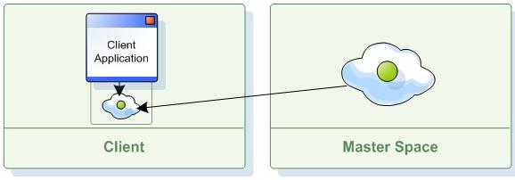

Section Summary: A client application may run a local side cache (near cache). There are two variations provided: local cache and local view. These allows the client application to cache specific or recently used data at the client memory address and have it updated automatically by the space when that data changes.
Client Side Cache - Near Cache
GigaSpaces supports client cache running within the application memory address. There are two variations provided:
Local View - This client side cache maintain specific subset of the entire data, where the cache warms up once the client is started.
Local Cache - This client side cache maintain any object used by the application. The cache data is loaded on demand (lazy fashion), based on the client read activities.
Local View
The local view maintains a subset of the master space's data, allowing the client to read distributed data without performing any remote calls or serializing the data. Data is streamed into the client local view based on a certain criteria(s) specified when the local view is created. The criteria is defined via a regular template or SQLQuery, as opposed to the local cache that caches data on the client side in a lazy manner (only after the data has been read for the first time by the application).
The local view is configured using the LocalViewSpaceFactoryBean class. The factory exposes the same IJSpace interface that a regular space component exposes. Nevertheless, it only supports read operations and will never access the remote space when such an operation is called. If the application performs data updates, it should have a second regular proxy and use it for such activities.

The following is an example of how a local view can be configured:
Spring Namespace Configuration
<os-core:space id="space" url="jini://*/*/space" /> <os-core:local-view id="localViewSpace" space="space"> <os-core:view-query where="processed = true" class="com.example.Message"/> </os-core:local-view> <os-core:giga-space id="gigaSpace" space="localViewSpace"/>
Plain Spring XML
<bean id="space" class="org.openspaces.core.space.UrlSpaceFactoryBean"> <property name="url" value="jini://*/*/space" /> </bean> <bean id="viewSpace" class="org.openspaces.core.space.cache.LocalViewSpaceFactoryBean"> <property name="space" ref="space" /> <property name="localViews"> <list> <bean class="com.j_spaces.core.client.view.View"> <constructor-arg index="0" value="com.example.Message" /> <constructor-arg index="1" value="processed = true" /> </bean> </list> </property> </bean>
Code
IJSpace space = // get Space either by injection or code creation IJSpace localViewProxy = new LocalViewSpaceConfigurer(space). addView(new View("com.example.Message", "processed = true")).localView(); GigaSpace gigaspace = new GigaSpaceConfigurer(localViewProxy).gigaSpace();
Streaming a Subset of the Master Space Data into the Client's Process Memory
Once the local view is constructed, data is pre-loaded into the client JVM's memory based on the view criteria (as opposed to the local cache that does not perform a pre-load stage). The local view is continuously updated by the master space in an asynchronous manner, using the notifications mechanism. Both write, take and update operations made on the master space are delivered into the client's process based on the view criteria.
Local View Considerations
- All operations (read and readMultiple) are served by the local view (as opposed to the local cache which reads data from the remote master space when it's first accessed or when readMultiple) is called and there are no enough matching objects within the client side cache).
- Data is never evicted from the local view - The cache policy is hard coded to ALL_IN_CACHE mode. So you have to be very careful not specify a local view criteria that would cause the local view to retrieve too much data from space. This can cause the local JVM to run out of memory.
- The Local View is a Read-Only. The following operations are not supported when using local view, and should be performed using a regualr space proxy:
- All write operations (write, writeMultiple).
- All update operations (update, updateMultiple).
- All take operations (take, takeById, takeMultiple, etc.).
- clear operation.
- Any operation under a transaction.
Local Cache
The local cache also maintains a subset of the master space's data, but unlike the local view that subset is based on the data that the client application accessed most recently, rather than a predefined subset of data.
You configure the local cache by using the LocalCacheSpaceFactoryBean class. The factory exposes the same IJSpace interface that a regular space component exposes, with the additional feature of caching recently accessed data locally.

The following is an example of how a local cache can be configured:
Spring Namespace Configuration
<os-core:space id="space" url="jini://*/*/mySpace" /> <os-core:local-cache id="localCacheSpace" space="space" update-mode="PULL" > <os-core:properties> <props> <prop key="space-config.engine.cache_size">5000000</prop> <prop key="space-config.engine.memory_usage.high_watermark_percentage">75</prop> <prop key="space-config.engine.memory_usage.write_only_block_percentage">73</prop> <prop key="space-config.engine.memory_usage.write_only_check_percentage">71</prop> <prop key="space-config.engine.memory_usage.low_watermark_percentage">45</prop> <prop key="space-config.engine.memory_usage.eviction_batch_size">1000</prop> <prop key="space-config.engine.memory_usage.retry_yield_time">100</prop> <prop key="space-config.engine.memory_usage.retry_count">20</prop> </props> </os-core:properties> </os-core:local-cache> <os-core:giga-space id="gigaSpace" space="localCacheSpace"/>
Plain Spring XML
<bean id="space" class="org.openspaces.core.space.UrlSpaceFactoryBean"> <property name="url" value="jini://*/*/space" /> </bean> <bean id="localCacheSpace" class="org.openspaces.core.space.cache.LocalCacheSpaceFactoryBean"> <property name="space" ref="space" /> <property name="updateMode" value="PULL" /> </bean>
Code
UrlSpaceConfigurer urlSpaceConfigurer = new UrlSpaceConfigurer("jini://*/*/space"); IJSpace localSpaceProxy = new LocalCacheSpaceConfigurer(urlSpaceConfigurer.space()).updateMode(UpdateMode.PULL).localCache(); GigaSpace gigaspace = new GigaSpaceConfigurer(localSpaceProxy).gigaSpace();
Local Cache Considerations
 When using a local cache with the GigaSpace interface, the cache policy is LRU and cannot be changed. When using the local cache with the GigaMap interface, the default cache policy is com.j_spaces.map.eviction.FIFOEvictionStrategy. You may use other policies. Please refer to the Map Component local cache section for more details.
When using a local cache with the GigaSpace interface, the cache policy is LRU and cannot be changed. When using the local cache with the GigaMap interface, the default cache policy is com.j_spaces.map.eviction.FIFOEvictionStrategy. You may use other policies. Please refer to the Map Component local cache section for more details.
 Local Cache with External Data Source:
Local Cache with External Data Source:
When the local cache works with a master space that has an External Data Source configured, it is important to make sure that the following guidelines are followed:
- Each POJO class should contain a SpaceVersion property.
- In the database, you should add a VERSION_ID column that will be mapped to this property in the corresponding tables. If you are using Hibernate, add the versionId property to the hbm.xml file or the @Version annotation to the mapped class.
- When initially loading data from the database to the master space, make sure that the version ID of the loaded objects is 1 or higher. This will "imitate" what is happening when writing a new object into the space. This will allow a client running a local cache to load an object into its local cache correctly once there is a cache miss within the local cache when a read operation is called.
- When clearing or taking objects you should make sure that the template used has the version ID field set to ZERO. This will ensure that the space will ignore the version id when performing the template matching.
Local Cache Memory Eviction
In order to properly configure the local cache eviction mechanism, you should consider tuning the following configuration elements:
space-config.engine.cache_size space-config.engine.memory_usage.high_watermark_percentage space-config.engine.memory_usage.write_only_block_percentage space-config.engine.memory_usage.write_only_check_percentage space-config.engine.memory_usage.low_watermark_percentage #when eviction kicks in, how many objects will be evicted on every eviction cycle space-config.engine.memory_usage.eviction_batch_size space-config.engine.memory_usage.retry_count space-config.engine.memory_usage.explicit-gc space-config.engine.memory_usage.retry_yield_time
See the Memory Management Facilities for additional details on these configuration properties.
 Having the property space-config.engine.memory_usage.explicit-gc set to 'enabled' is recommended only in extreme cases when there is high load on the system, with large amount of concurrent users accessing the local cache and when the amount of CPUs/Cores is relatively small.
Having the property space-config.engine.memory_usage.explicit-gc set to 'enabled' is recommended only in extreme cases when there is high load on the system, with large amount of concurrent users accessing the local cache and when the amount of CPUs/Cores is relatively small.
Local Cache Memory Handling
There might be cases when the local cache would not be able to evict its data fast enough. This will result in an exception thrown on the client side. The reasons for this behavior might be very large objects stored within the local cache, large amount of concurrent access to the local cache or relatively small JVM heap. In such a case a RemoteException will be thrown.
You should catch this Exception and check its cause. If the cause is MemoryShortageException you should sleep for a while and let the client JVM release the evicted memory and retry the operation. See below an example for this:
GigaSpace gigaspace; while(true) { try { Object obj = gigaspace.read(template); break; } catch (Exception re) { if (re.getCause() instanceof MemoryShortageException) Thread.sleep(1000); } }
Local Cache Update Policies
The local cache update policy defines how changes with the master Space objects are propagated to the local cache.
Each change on master space notifies the local cache about the change.
| Only actual object changes in master space are propagated to the cache - update and take. Object eviction or reload from the External Data source do not update the local cache. |
There are two local cache update policies you may choose from: Push and Pull.
The Push Policy
When using the Push update policy, the local cache get a notification about the change, it receives the recent copy of the object from the master space and 'pushes' the update to the local cache immediately.

| This policy should be used for applications that perform more reads than updates, when it is important to reduce cache misses. |
The Pull Policy
When using the Pull policy, the local cache get a notification about the change, and removes the stale object from the local cache (invalidate). The next time the client tries to read the object, it will be reloaded from the master space and stored in the local cache.

| This policy should be used for applications that perform more updates than reads, when it is important that updates don't overload the cache with constant updates and cache misses are acceptable. |
Local Cache Read Flow
A read operation performed on local cache in the following order:
1. The local cache is checked.
2. If the requested object is found in the local cache, it is returned back to the application.
3. If the requested object is not found in the local cache, the master space is queried.
4. If the object is found within the master space, the object is stored within the local cache and returned back to the application.
A readMultiple operation performed on local cache in the following order:
1. The local cache is checked.
2. If all the requested objects are found within the local cache (based on the amount of the max_objects parameter of the readMultiple call), they are returned back to the application.
3. If the amount of matching objects found within the local cache is smaller than the specified max_objects, the master space is queried.
4. All relevant matching object are stored into the local cache and returned back to the application.
 To avoid a readMultiple call from the master space make sure you do not use Integer.MAX_VALUE as the max_objects value.
To avoid a readMultiple call from the master space make sure you do not use Integer.MAX_VALUE as the max_objects value.
- Transactional operations are always executed on the master space.
- Blocking Read - read with timeout first checks the local cache (without blocking - i.e. timeout=0), and if requested object is not found, the master space is checked.
- ReadModifiers - {{ReadModifiers} such as DIRTY_READ or EXCLUSIVE_READ are ignored when using local cache.
Local Cache Update
Cached object updates are executed both on the master space and local cache.
| If application holds a reference to a cached object, the object is updated in the cache but it's reference is not updated. So it has to be refreshed by the application. |
- Transactional object update - updates the object in the master space. It also removes any old copy from the local cache. This is done to provide transactional consistency. Once a transaction is committed, the data is updated within the local cache according to the update policy.
Local Cache Take
Take is always executed on both the local space and the master space.
- Blocking Take - take with timeout>0 will block until an object is available on the master space - just like regular take.
Object Reference Storage Mode
Starting with XAP 7.0, the Space API local cache and local view have been modified to return a reference to the space object rather than returning a shallow copy (An object with a copy of the primitive fields and reference to the non-primitive fields) as performed with older versions. An identical object reference will be returned when conducting sub-subsequent read operation for the same object.
When using a local cache/view, a new object reference will be returned when:
- The object has been evicted and reloaded from the master space (relevant only for local cache).
- The object has been modified and an updated version has been sent from the master space via notification.
This improvement means the read operations using the GigaSpace.readByID , GigaSpace.read, GigaSpace.readMultiple (using a limited max objects where all the objects cached), GSIterator - having a local cache/view running at the client side, will be very fast and would not involve any new object generation.
This behavior lowers the JVM garbage collection impact on the application. In addition, all read based operations have been improved to be non-lock calls. This lowers the contention on the system when having large amount of concurrent threads reading data from the local cache/view (ideal for a web applications).
| Tests of the local cache with XAP 7.0 having 10 client threads using a local cache resulted 20M read/sec using 8 cores box. |
To control object storage type use the following property use the following:
- space-config.dist-cache.storage-type - (reference | shallowCopy ) - defines how local cache stores its data. Default is reference.
| Use Native Serialization mode When running a local cache/view you should use Native Serialization mode with the master space. Running in any other serialization mode might impact the speed of reading objects from the local cache/view and the client Memory utilization behavior. |
Local Cache / Local View Disconnection
When a connection between client local cache/view and remote master space is disrupted, the local cache/view identifies this disconnection and tries to reconnect with the remote space. The Local cache/view tries to reconnect several times before it fails. There are 2 types disconnections:
- Temporary disconnection - The local cache/view is reconnected successfully and client application can continue to run normally. In such a case, the cached data is cleared. This avoids stale data in the cache. There will be some performance impact to allow the cache to reload its data after reconnection. In case of a local view the data is refreshed by reading the view data from the master space.
- Permanent disconnection (remote space is down) - The local/view cache becomes unusable. All data is cleared and further operations on the local cache/view are blocked.
Properties to control the reconnection (can be set on the local cache/view bean configuration or via API call):
- space-config.dist-cache.retry-connections - (a number) - defines how many times the local cache should retry to reconnect with the master space in case of a disconnection. Default is 3.
- space-config.dist-cache.delay-between-retries - (in milliseconds) - defines wait period between connection retries in case of a disconnection with the master space. Default is 5000 milliseconds.
| While the reconnection process is in progress, the application can continue to use the data in the cache, but if an access to the remote space is needed (object update for example) and remote space is still not available, the operation will fail. |
Here is an example how to set these parameters with a local view:
<os-core:space id="space" url="jini://*/*/space" /> <os-core:local-view id="localViewSpace" space="space"> <os-core:view-query where="processed = true" class="com.example.Message"/> <os-core:properties> <props> <prop key="space-config.dist-cache.retry-connections">10</prop> <prop key="space-config.dist-cache.delay-between-retries">10000</prop> </props> </os-core:properties> </os-core:local-view> <os-core:giga-space id="gigaSpace" space="localViewSpace"/>
Local Cache/View Configuration Properties
Local Cache Only
| Property | Description | Default Value | Unit |
|---|---|---|---|
| space-config.dist-cache.update-mode | Control the local cache update policy. Relevant only for a local cache. Options: PULL = 1, PUSH = 2 | 1 | |
| space-config.engine.cache_size | Local cache maximum total number of objects. | 5000000 | Number of objects |
| space-config.engine.memory_usage.high_watermark_percentage | See the Memory Management Facilities for details. | 95 | percentage |
| space-config.engine.memory_usage.write_only_block_percentage | See the Memory Management Facilities for details. | 85 | percentage |
| space-config.engine.memory_usage.write_only_check_percentage | See the Memory Management Facilities for details. | 76 | percentage |
| space-config.engine.memory_usage.low_watermark_percentage | See the Memory Management Facilities for details. | 75 | percentage |
| space-config.engine.memory_usage.eviction_batch_size | See the Memory Management Facilities for details. | 500 | number of object |
| space-config.engine.memory_usage.retry_yield_time | See the Memory Management Facilities for details. | 50 | milliseconds |
| space-config.engine.memory_usage.retry_count | See the Memory Management Facilities for details. | 5 | |
| space-config.engine.memory_usage.explicit-gc | See the Memory Management Facilities for details. | false | |
| space-config.dist-cache.events.batch.size | Max batch size to use when updating the local cache | 1000 | objects |
| space-config.dist-cache.events.batch.timeout | Determines how frequent the local cache will be updated. Low number means high frequency. | 100 | milliseconds |
| space-config.dist-cache.eviction-strategy | Supported only with local cache used with the GigaMap API. | com.j_spaces.map.eviction.FIFOEvictionStrategy |
Local Cache/View
| Property | Description | Default Value | Unit |
|---|---|---|---|
| space-config.dist-cache.retry-connections | Specify how many times the local cache should retry to reconnect with the master space in case of a disconnection. | 3 | |
| space-config.dist-cache.delay-between-retries | Specify wait period between connection retries in case of a disconnection with the master space. | 5000 | milliseconds |
| space-config.dist-cache.events.enabled | Boolean value. Set this property of true to turn on local cache/view automatic updates streaming from the master space | true | |
| space-config.dist-cache.events.lease | Local/Cache View lease duration. | 60000 | milliseconds |
| space-config.dist-cache.events.lease-renew.expiration | Lease renewal expiration time | 9223372036854775807 | milliseconds |
| space-config.dist-cache.events.lease-renew.duration | Lease renewal duration | 60000 | milliseconds |
| space-config.dist-cache.events.lease-renew.round-trip-time | Lease renewal round trip time | 10000 | milliseconds |
| space-config.dist-cache.storage-type | Specify how local cache/view stores its data. Options: reference or shallowCopy | reference |
| Starting with XAP 8, the local view lease renew settings and notify batch settings are using the same parameters the local cache is using. |